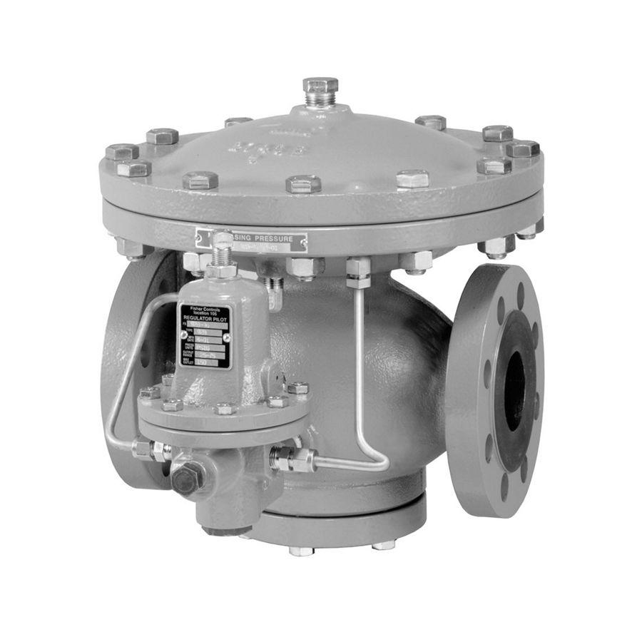
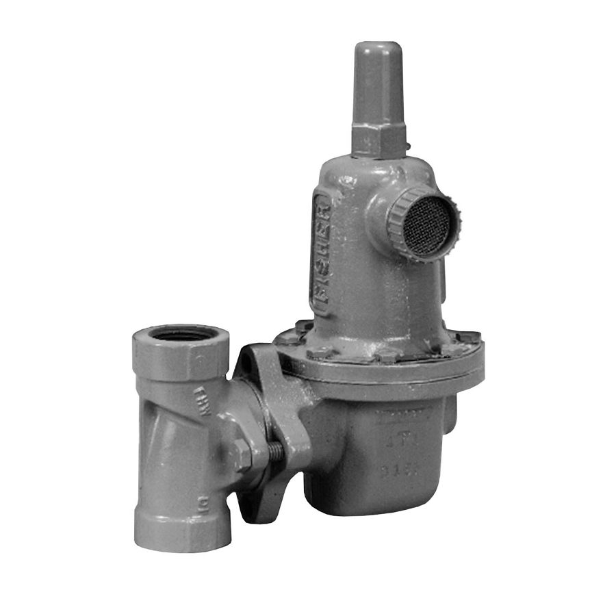
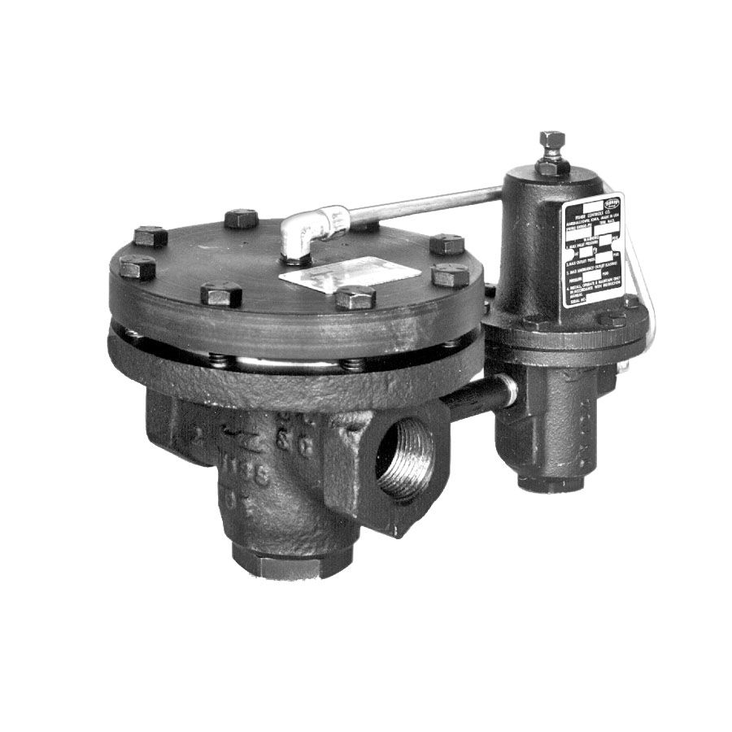
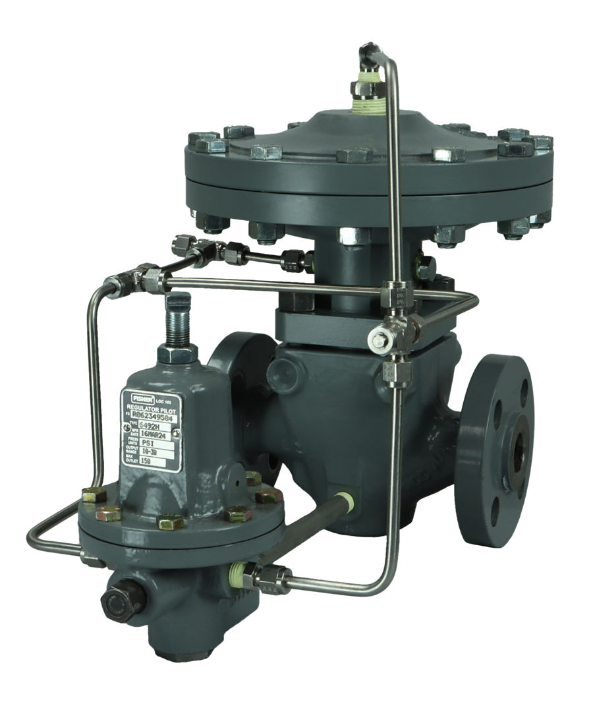
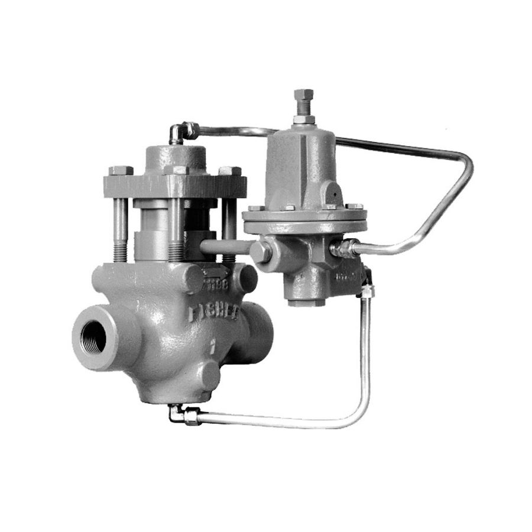
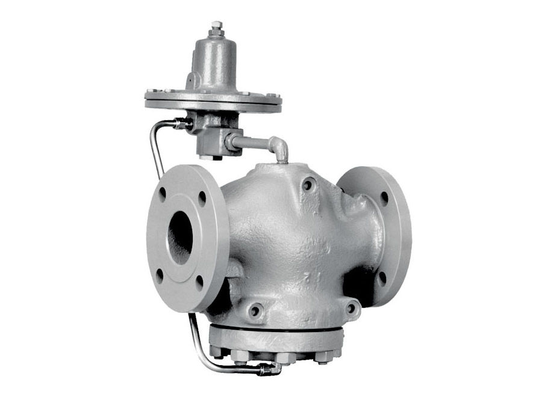
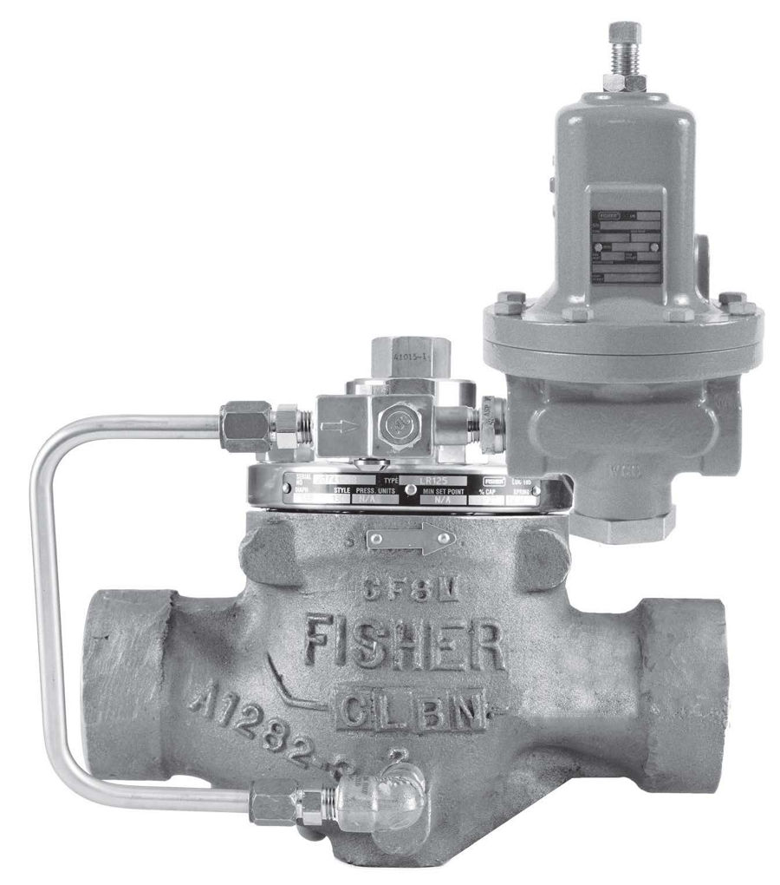
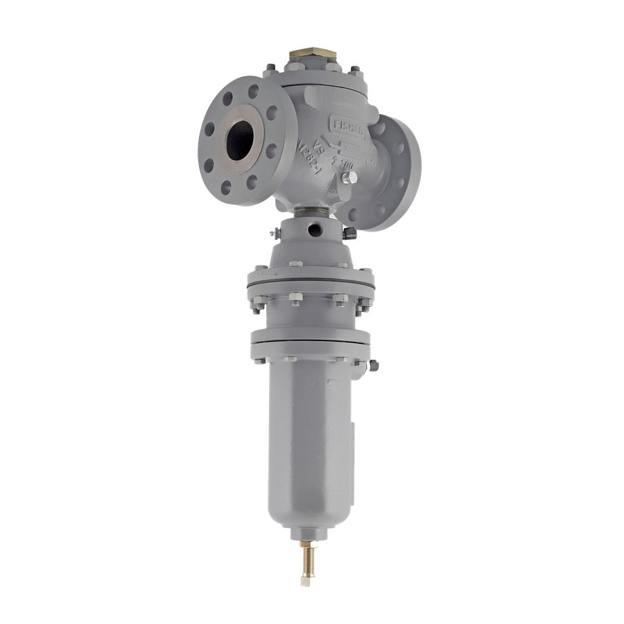

Fisher 92B Pressure Reducing Valve
Van giảm áp hơi có pilot; ba pilot để chọn; thân gang, thép, inox; NPS 1/2–4.
Van giảm áp hơi và chất lỏng Fisher 92B, 92S, 92C, LR125, 627W, MR105, SR5 cho mạng hơi, nước và hóa chất.
Fast Group cung cấp van giảm áp hơi & chất lỏng Fisher chính hãng, đủ CO/CQ. Mỗi model có trang riêng với mô tả, biến thể, tài liệu kỹ thuật và hướng dẫn gửi RFQ.

Van giảm áp hơi có pilot; ba pilot để chọn; thân gang, thép, inox; NPS 1/2–4.

Van giảm áp Fisher 627W. Fisher Types 627W and 627WH pressure reducing regulators are direct-operated for liquid service.

Van giảm áp Fisher 92C. Type 92C is a self‑powered steam regulator. It offers pilot‑operated control without air or pressure‑loaded…

Van giảm áp Fisher 92EZ. The 92EZ PRV sets the standard for steam pressure control. It delivers durable, stable performance across…

Van giảm áp Fisher 92S. Type 92S valves suit high‑cycle steam. They use lapped seats and sealed pilots and operate to 250 psig/17.2…

Van giảm áp Fisher 92W. Type 92W is a liquid regulator with a 6492H or 6492L pilot. It uses proven design and senses inlet and…

Van giảm áp Fisher LR125. LR125 is a pilot‑operated liquid regulator offering smooth operation and tight shutoff. Its design protects…

Van giảm áp Fisher MR105. MR105 is a high‑capacity regulator for liquid, air, or gas. It suits fast response needs and works well in…

Van giảm áp Fisher SR5. SR5 is a compact sanitary pressure regulator for pharma, biotech, and food use. It handles steam, liquids,…
Trụ sở TP. Hồ Chí Minh và văn phòng Vũng Tàu đều tiếp nhận RFQ, tư vấn cấu hình và bàn giao bộ chứng từ CO/CQ; bảo hành chính hãng 12 tháng kể từ ngày giao hàng. Yêu cầu gửi trong giờ làm việc được phản hồi trong cùng ngày; giao hàng toàn quốc.
150/41 Nguyễn Cư Trinh, P. Cầu Ông Lãnh
51 Lê Văn Lộc, P. Vũng Tàu